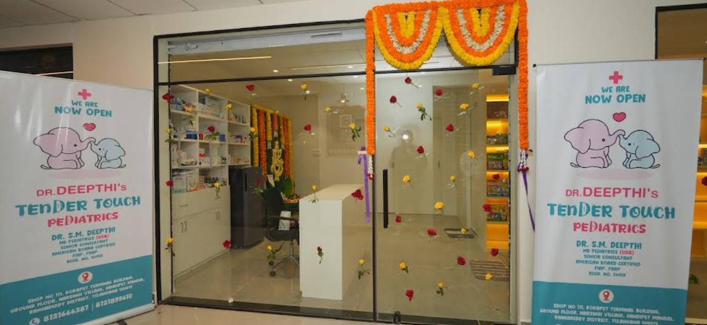

Well-Child Checkups
Regular health checks to track growth, development, and milestones. A good time to discuss sleep, feeding, behavior, and school concerns in a relaxed way.
American Board Certified Pediatrician
MD Pediatrics (USA)
15+ years of pediatric experience
Whether your child is due for vaccines, feeling unwell, or you simply need clarity about their growth, this is a calm, child-friendly space where you'll be heard and your concerns are taken seriously. We follow gentle, evidence-based pediatric care and explain what is truly needed in clear, simple language.
Serving families from Kokapet, Gandipet, the Financial District, and surrounding areas in Hyderabad. Not for emergencies – in case of emergency, please visit the nearest hospital.
Tender Touch Pediatric Clinic is a calm, child-friendly space in Kokapet, Hyderabad, created to make doctor visits easier for both children and parents. From the waiting area to the consultation room, everything is designed to feel gentle, warm, and unhurried.
The clinic is led by Dr. S M Deepthi, an American Board Certified Pediatrician with MD Pediatrics (USA) and over 15 years of experience. Her approach is to listen first, explain clearly, and avoid unnecessary medicines or tests.
We primarily serve families from Kokapet, Gandipet, Narsingi, the Financial District, and nearby areas in Hyderabad, but parents from across the city are welcome.

Regular health checks to track growth, development, and milestones. A good time to discuss sleep, feeding, behavior, and school concerns in a relaxed way.
Evidence-based vaccine schedules with clear explanations on what is due, what can be combined, and how to keep your child comfortable before and after shots.
Fever, cough, cold, vomiting, loose stools, rashes and more. We focus on identifying what is serious, what can be safely managed at home, and when to recheck.
Support for feeding, jaundice, weight gain, colic, crying, and sleep in the first months of life. Space for new parents to ask every question they carry.
Age-appropriate screening for speech, social skills, movement, and learning so that any delays are picked up early and you know what to look out for.
Support for pre-teens and teenagers on growth, puberty, emotional health, and lifestyle in a non-judgmental, private, and respectful setting.
Dedicated time for parents to understand confusing reports, second opinions, or long-standing concerns about their child’s health or behavior.
Simple, practical guidance on fussy eating, underweight, overweight, and balanced nutrition without unnecessary supplements or fad diets.
Share a few details and our clinic staff will call you to confirm the exact time. You can choose between an in-clinic visit or an online pediatric consultation.
For emergencies (severe breathing difficulty, seizures, major injury, or your child looks very unwell), please visit the nearest hospital emergency immediately instead of waiting for an appointment.
Instead of hearing from us, hear from parents who have brought their children to the clinic.
“Doctor patiently listened to all our concerns about our toddler's feeding and sleep. We left feeling calmer and with a clear plan.”
— Parent of a 2-year-old
“Very gentle with vaccines. My child was surprisingly relaxed, and everything was explained before giving any injection.”
— Parent of a 6-month-old
“We appreciated the honest guidance about what is truly needed and what can be avoided. No unnecessary medicines or tests.”
— Parent of a 10-year-old
Tender Touch Pediatric Clinic
Pediatrician: Dr. S M Deepthi
Address:
Shop No. 111, Ground Floor, Kokapet Terminal Building, Radha Spaces, Gandipet Main Road, Kokapet, Hyderabad
Phone: +918121666387
Email: admin@tendertouchpediatrics.in
Clinic hours: Mon–Sat, 11:00 AM – 2:00 PM & 5:00 PM – 8:00 PM
Online consults: 8:00 AM – 8:00 PM (by prior booking)
Not for emergencies – in case of emergency, please visit the nearest hospital immediately.